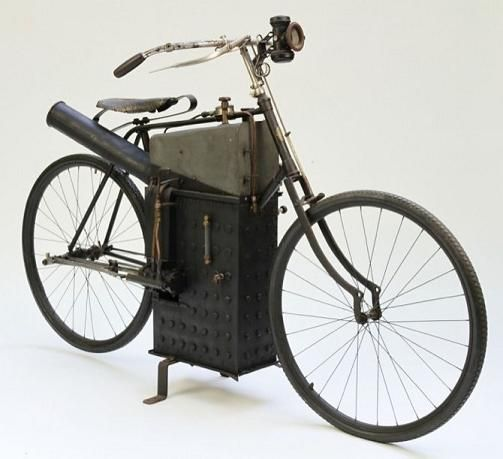

Curiosidades importante sobre motos
Você sabia que a Triumph é uma das marcas de motos mais antigas do mundo, com mais de 100 anos? Sabia que uma das marcas mais caras é a Bimota? Deixamos a seguir algumas curiosidades muito interessantes para que você saiba mais sobre o fascinante mundo das motos.
quem foi primeiro sujeito a idealizar?
Um dos primeiros sujeitos a idealizar o “antepassado” das bicicletas e motos foi ninguém menos que o italiano Leonardo da Vinci.
Acredite se quiser, mas as primeiras bicicletas eram feitas de madeira. Na Europa do século XVIII, elas eram chamadas de “celeríferos”.
Você sabia?
A motocicleta foi inventada simultaneamente por um francês e um norte-americano no ano de 1869. Mas é bom deixar claro que o que Louis Perreaux e Sylvester Roper inventaram, na verdade, foi apenas uma bicicleta equipada com um motor a vapor.
Logo a cima tem uma imagem de uma motocicleta a vapor
Qual foi uns dos primeiros fablicantes de motocicleta?
Em 1910, já existiam cerca de 400 fabricantes de motocicletas no mundo. O primeiro deles surgiu na Alemanha em 1894, e se chamava Hildebrandt & Wolfmüller.